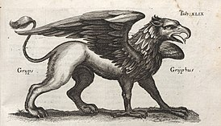
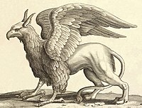

Грифо́ны (др.-греч. γρύψ, лат. grȳphus в ед.ч. грифон) — мифические крылатые существа с туловищем льва и головой орла, в другом источнике животное с птичьей головой, туловищем львицы и крыльями.
Грифоны имеют острые когти и белоснежные, или золотистого цвета крылья. Грифоны — противоречивые существа, одновременно объединяющие Небеса и Землю, Добро и Зло. Их роль — и в различных мифах, и в литературе — неоднозначна: они могут выступать и как защитники, покровители; и как злобные, ничем не сдерживаемые звери. Поскольку лев традиционно считался царём зверей, а орел — царём птиц, в Средние века грифон считался особенно могущественным и величественным существом. С античных времён грифоны известны тем, что охраняли сокровища или другое ценное имущество. В другом источнике грифоны, чудовищные животные стерегли серебро и золото, сокрытое в горах и реках с которыми беспрестанно воевали аримаспы. В греческих и римских текстах грифоны вместе с легендарным народом аримаспов ассоциировались с месторождениями золота Средней Азии. Так Плиний Старший писал: «говорят, что грифоны откладывают яйца в норы на земле, и эти гнезда содержат золотые самородки».